Publications
For all my papers, see both Google Scholar and University site.
2026
 Advances in Artificial Intelligence: a Review for the Creative Industries
Advances in Artificial Intelligence: a Review for the Creative Industries-

 Prune Wisely, Reconstruct Sharply: Compact 3D Gaussian Splatting via Adaptive Pruning and Difference-of-Gaussian Primitives
Prune Wisely, Reconstruct Sharply: Compact 3D Gaussian Splatting via Adaptive Pruning and Difference-of-Gaussian Primitives Bayesian Neural Networks for One-to-Many Mapping in Image Enhancement
Bayesian Neural Networks for One-to-Many Mapping in Image Enhancement RMFAT: Recurrent Multi-scale Feature Atmospheric Turbulence Mitigator
RMFAT: Recurrent Multi-scale Feature Atmospheric Turbulence Mitigator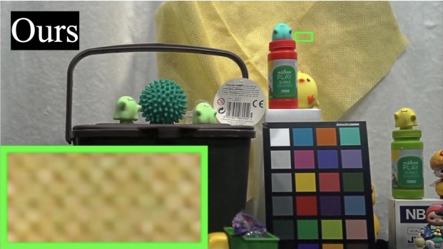
TempRetinex: Retinex-based Unsupervised Enhancement for Low-light Video Under Diverse Lighting Conditions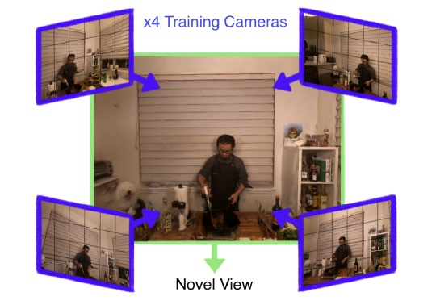
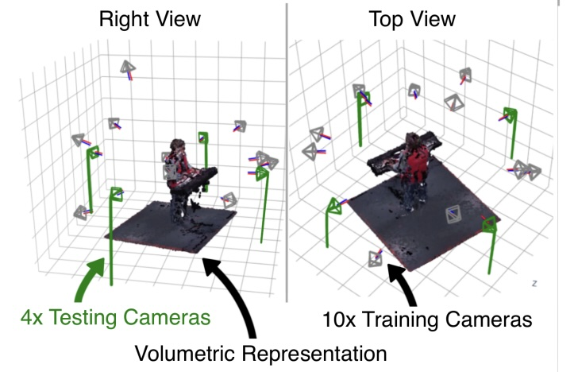
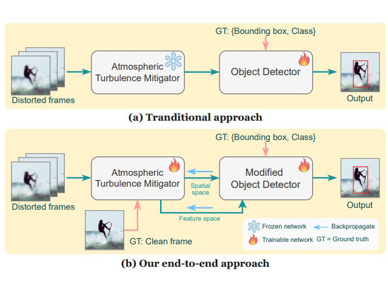
DMAT: An End-to-End Framework for Joint Atmospheric Turbulence Mitigation and Object Detection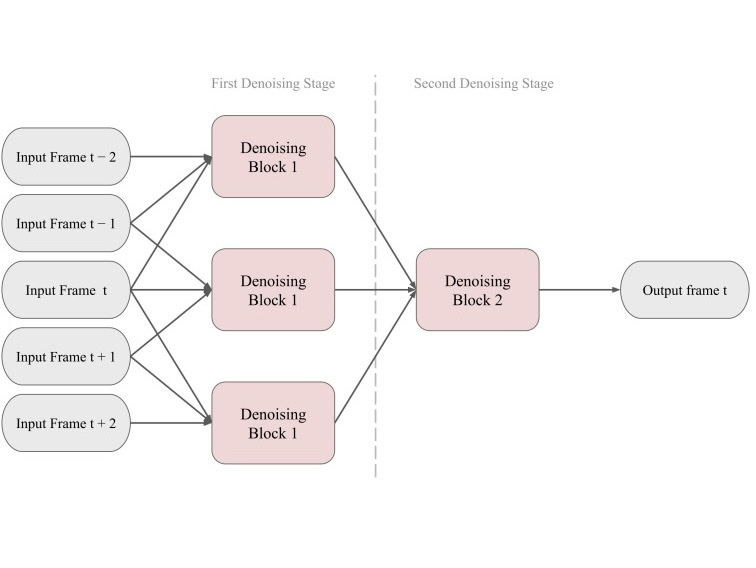
PocketDVDNet: Realtime Video Denoising for Real Camera Noise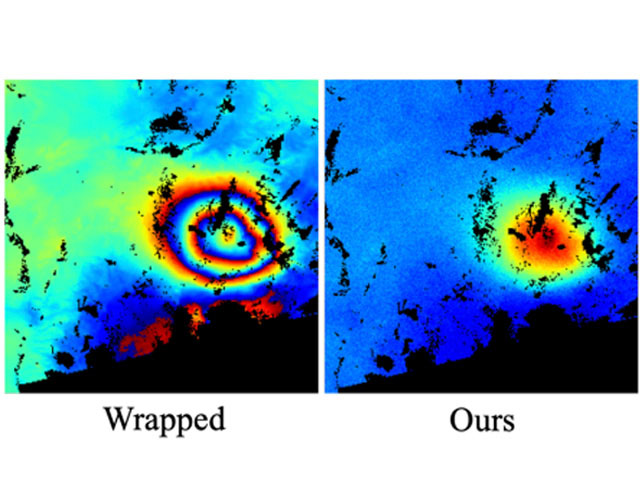
PUnwrapDiff: Conditional Diffusion for Robust InSAR Phase Unwrapping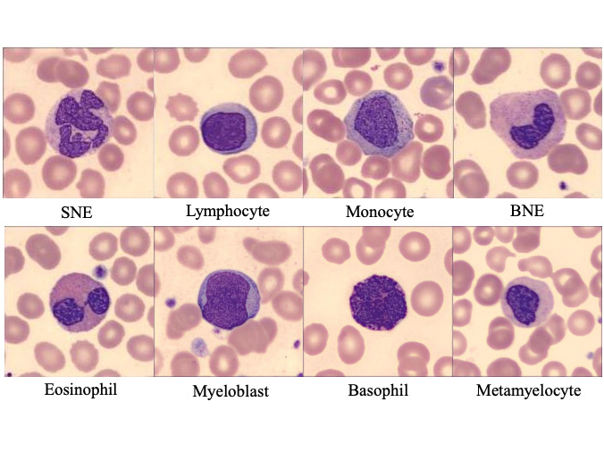
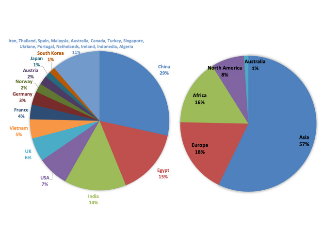
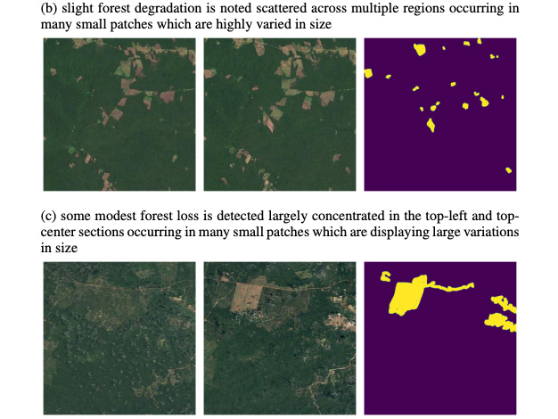
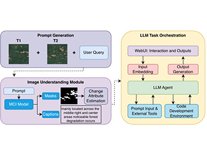
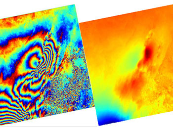
Shortlisted for Best Student Paper AwardAn InSAR Phase Unwrapping Framework for Large-scale and Complex Events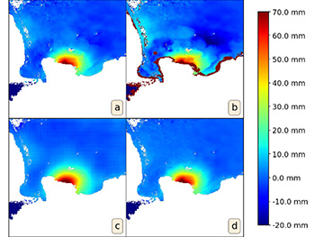
Deep Learning-Based Denoising of Unwrapped Interferograms
2025
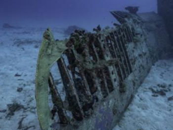
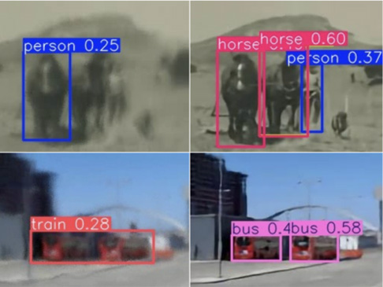
JDATT: A Joint Distillation Framework for Atmospheric Turbulence Mitigation and Target Detection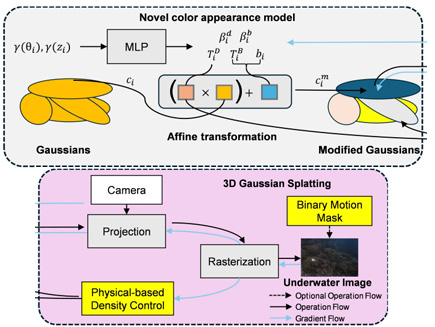
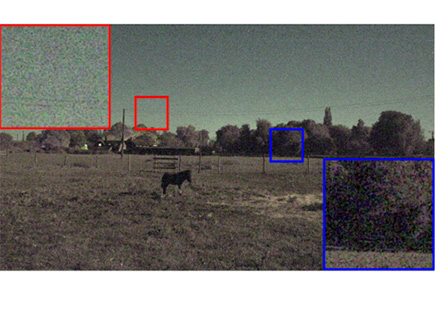
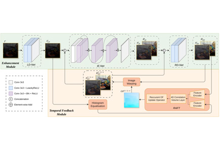
Top 10 Student Paper AwardZero-TIG: Temporal Consistency-Aware Zero-Shot Illumination-Guided Low-light Video Enhancement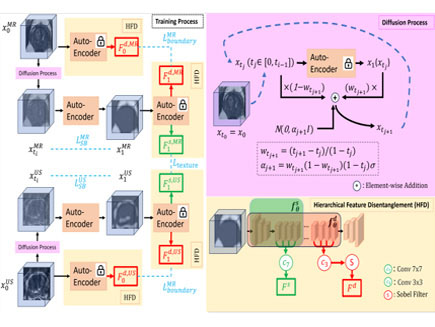
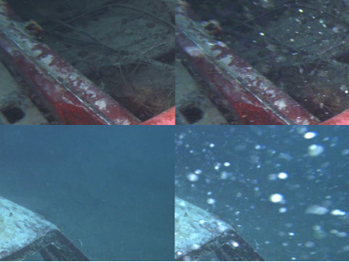
Marine Snow Removal Using Internally Generated Pseudo Ground Truth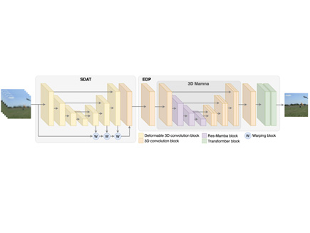
MAMAT: 3D Mamba-Based Atmospheric Turbulence Removal and its Object Detection Capability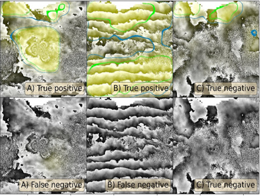
Unsupervised anomaly detection for volcanic deformation in InSAR imagery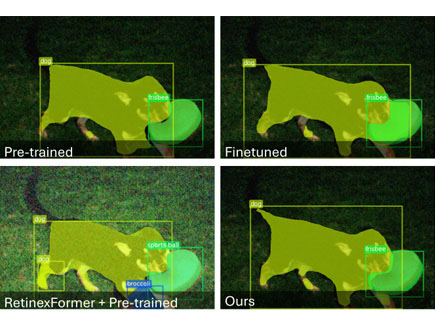
Multi-Scale Denoising in the Feature Space for Low-Light Instance Segmentation Reviewing Intelligent Cinematography: AI Research for Camera-based Video Production
Reviewing Intelligent Cinematography: AI Research for Camera-based Video Production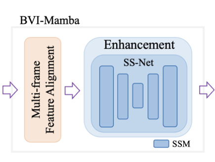
BVI-Mamba: video enhancement using a visual state-space model for low-light and underwater environments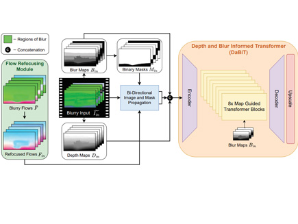
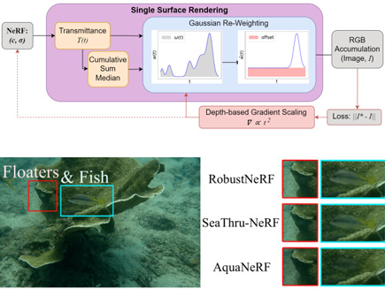
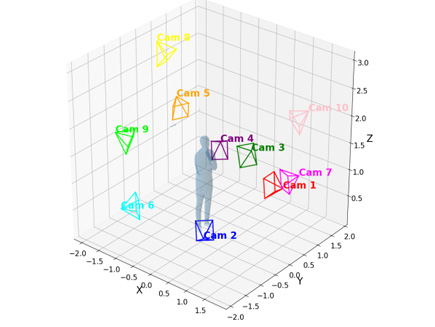
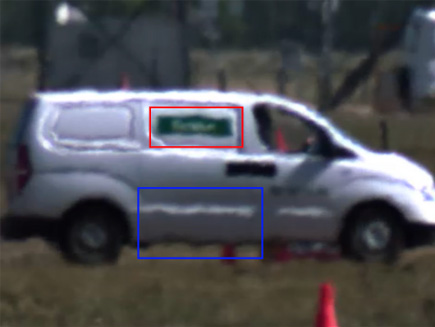
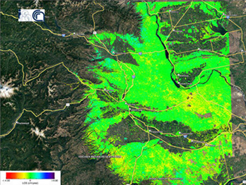
Hybrid GIS-Transformer Approach for Forecasting Sentinel-1 Displacement Time Series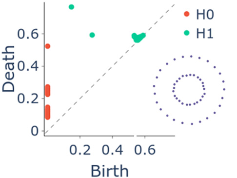
Wavelet-Based Topological Loss for Low-Light Image Denoising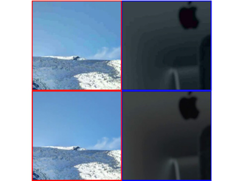
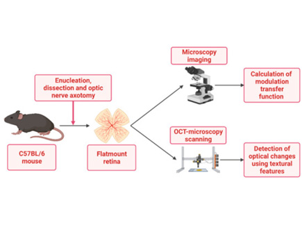
SVM-Based optical detection of retinal ganglion cell apoptosis
2024
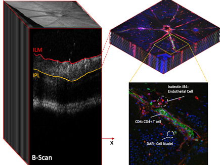
The Quest for Early Detection of Retinal Disease: 3D CycleGAN-based Translation of Optical Coherence Tomography into Confocal Microscopy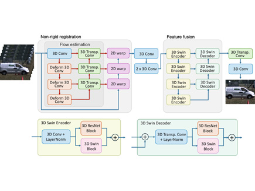
DeTurb: Atmospheric Turbulence Mitigation with Deformable 3D Convolutions and 3D Swin Transformers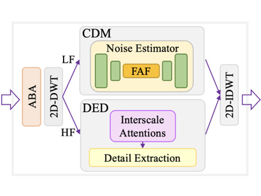
Best Paper AwardLow-light Video Enhancement with Conditional Diffusion Models and Wavelet Interscale Attentions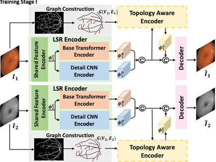
TaGAT: Topology-Aware Graph Attention Network For Multi-modal Retinal Image Fusion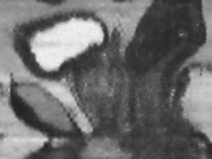
PMT: Partial-Modality Translation Based on Diffusion Models for Prostate MR and Ultrasound Image Registration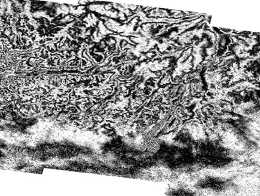
Learning Ground Displacement Signals Directly from InSAR-Wrapped Interferograms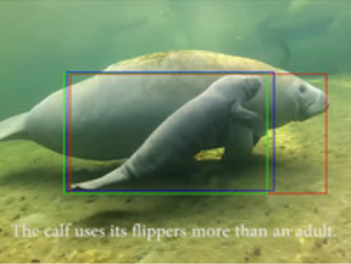
A comprehensive study of object tracking in low-light environments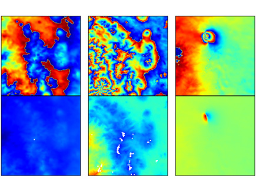
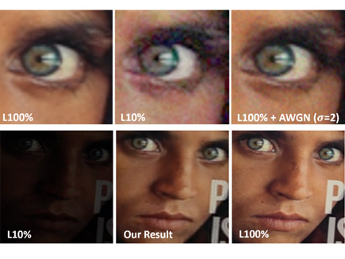
A Spatio-temporal Aligned SUNet Model for Low-light Video Enhancement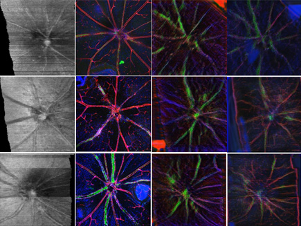
OCT2Confocal: 3D CycleGAN based Translation of Retinal OCT Images to Confocal Microscopy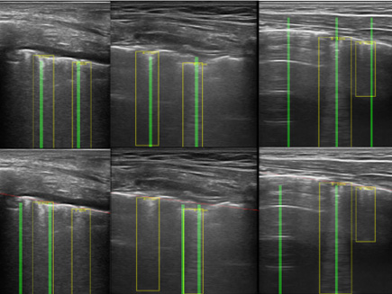
DUBLINE: A Deep Unfolding Network for B-line Detection in Lung Ultrasound Images
2023
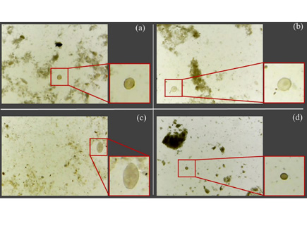
Parasitic Egg Detection and Classification in Low-cost Microscopic Images using Transfer Learning
- Current Advances in Computational Lung Ultrasound Imaging: A Review
- A Semi-supervised Learning Approach for B-line Detection in Lung Ultrasound Images
2022
- Artificial Intelligence in the Creative Industries: A Review
- Textural Feature Analysis of Optical Coherence Tomography Phantoms
2021
- Contextual colorization and denoising for low-light ultra high resolution sequences
- Baseline monitoring of volcanic regions with little recent activity: application of Sentinel-1 InSAR to Turkish volcanoes
2020
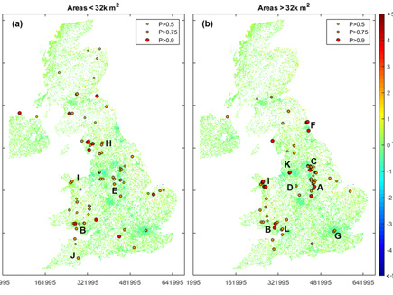
- River Planform Extraction From High-Resolution SAR Images Via Generalised Gamma Distribution Superpixel Classification
- Detection of Line Artefacts in Lung Ultrasound Images of COVID-19 Patients via Non-Convex Regularization
2019
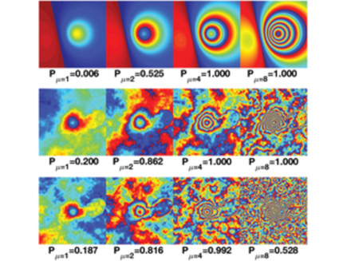

- Regularisation With a Dictionary of Lines for Medical Ultrasound Image Deconvolution
2018
2017
- Line Detection as an Inverse Problem: Application to Lung Ultrasound Imaging
- Exploiting texture information in diagnosing Glaucoma
2016
- Fixation Identification for Low-Sample-Rate Mobile Eye Trackers
- Visual Salience and Priority Estimation for Locomotion using a Deep Convolutional Neural Network
- Automatic B-line detection in paediatric lung ultrasound
2015
- Robust texture features based on undecimated dual-tree complex wavelets and local magnitude binary patterns
- Undecimated dual-tree complex wavelet transforms
2014
- Adaptive-Weighted Bilateral Filtering and Other Pre-processing Techniques for Optical Coherence Tomography
- Orientation estimation for planar textured surfaces based on complex wavelets
2013
- Atmospheric turbulence mitigation using complex wavelet-based fusion
- Adaptive-weighted bilateral filtering for Optical Coherence Tomography
- SVM-based texture classification in optical coherence tomography
- Projective image restoration using sparsity regularization
- Curvelet domain image fusion of OCT and fundus imagery using convolution of meridian distributions
2003 – 2012
- Mitigating the effects of atmospheric distortion using DT-CWT fusion
- Colour volumetric compression for realistic view synthesis applications
- Colour Correction for Assessing Plant Pathology Using Low Quality Cameras
- In-band disparity compensation for multiview image compression and view synthesis
Technical Reports
- Mitigating the effects of atmospheric distortion
- Mitigating the effects of atmospheric distortion on video imagery: A review
- Image fusion study — Final report
- Literature review of image fusion